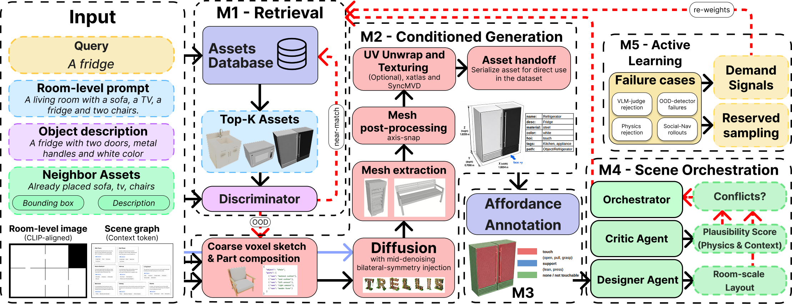
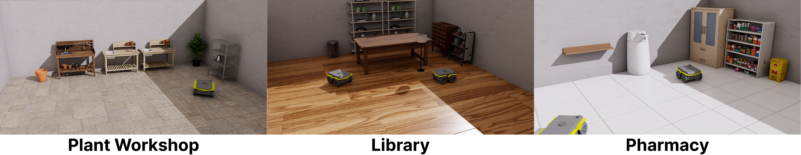
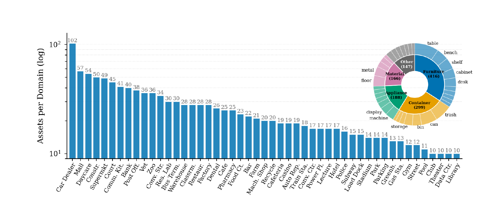
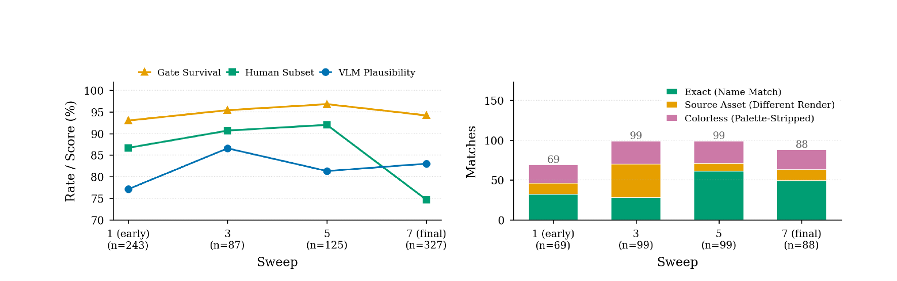

1,000+
VLM-verified, affordance-labeled assets
~10 min
per asset on one consumer GPU
80%
in-loop pass rate
3
target domains: hospital, office, airport
Social-navigation robots are trained in simulation, but the asset libraries that furnish those simulators are built by hand and rarely updated. They tend to lack the everyday objects a robot meets in hospitals, offices, and airports: gurneys, check-in kiosks, printer stations, queue barriers.
INFILL treats the catalog as something that grows. When a scene calls for an object the library can’t supply, INFILL generates it to fit the space, labels how a person would physically use it, and checks it in a physics simulator before adding it in. Anything that fails feeds back to steer what gets generated next, so the catalog keeps expanding toward whatever the simulated scenes actually need. The dataset is openly available — explore a live slice below, or download the full release.
A closed loop: when the catalog can’t supply an object, INFILL generates it, labels how it’s used, checks it in simulation, and learns from whatever fails.

The loop, end to end. A request the catalog can’t satisfy triggers generation under size and physics constraints; an affordance step labels how people use the object; the finished asset is handed off to the catalog and arranged into scenes; and the failure cases feed back to re-weight the next round of generation.
Every request is first matched against the existing catalog. Only the genuine gaps — objects that truly aren’t there yet — are passed on, so the engine never regenerates what it already has.
Missing objects are generated to match a target footprint, then cleaned up into straight-edged, simulator-ready meshes that drop into a scene at the right scale.
A vision-language model marks how people physically interact with each object — where you sit, lean, stand, or queue — and paints those labels directly onto the mesh.
Agents arrange the new assets into believable rooms, score how plausible each layout is, and surface the next objects the scenes are still missing.
Whatever gets rejected — by the quality check, the physics gate, or a downstream robot rollout — becomes a signal that steers what the engine generates next.
Pose-level HOI affordance vocabulary projected onto every asset:
A live slice of the INFILL catalog. Click any asset to spin it 360° — drag to rotate, release to coast.

Isaac Sim scenes populated with INFILL-generated assets across outdoor-service, workshop, and storage-room settings (Plant Workshop, Library, Pharmacy). The expanded catalog supports simulator-ready placement of domain-specific furniture with consistent scale, collision geometry, and scene context for downstream mobile-robot evaluation.

Domain coverage (INFILL-1K, seven expansion sweeps). The release spans the target hospital/office/airport distribution and adjacent public-space domains; the sunburst shows the category breakdown (furniture, container, appliance, material, other). Closed-loop expansion broadens the catalog rather than saturating a single category family.

Quality signals across sweeps. Left: per-sweep artifact completeness, VLM plausibility, human subset agreement, and physics-gate survival. Right: VLM-scored sample size and asset-match signals. The release maintains complete artifacts while quality signals remain stable across the production run.